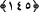

şerlileri alimleridir, fitne onlardan çıkar ve tekrar onlara döner.”
Sa’dî (k.s.) der ki:
Şimdi senin kusurlarından tövbe etmen gerekir
Nefs-i nâtık gibi susup kalman değil
Allah’ım, bizi zikredenlerden, şükredenlerden kıl! Âmîn yâ Muîn!
144- Ey îman edenler! Mü’minleri bırakıp da kâfirleri dost edinmeyin; (böyle
yaparak) Allah’a, aleyhinizde apaçık bir delil mi vermek istiyorsunuz?
Ey îman edenler! Mü’minleri bırakıp da kâfirleri dost edinmeyin; Yâni, yahûdîleri
ve İslâm düşmanlarını dost edinen münâfıklara benzemeyin.
Mü’minlerden gayrını dost edinmekle nifaka düştüğünüze dair “Allah’a, aleyhinizde
apaçık bir delil mi vermek istiyorsunuz?” Çünkü, mü’minlerden gayrısını dost
edinmek, kişinin nifakını gösteren en açık delillerdendir. Âyetteki “sultan” huccet,
delil, burhan demektir. Emire sultan denir ve bununla onun huccet olduğu kastedilir.
Âyetteki “sultan” kelimesine vâli, idâre eden mânâsı vermek de câizdir. Bu takdirde
mânâ şöyle olur: Üzerinizde Allah’ın emrine boyun eğen, suç işlediğinizde sizi
cezâlandıracak bir idareci olmasını ister misiniz?
145- Şüphe yok ki münâfıklar cehennemin en alt katındadırlar. Artık onlara aslâ
bir yardımcı bulamazsın.
Şüphe yok ki münâfıklar cehennemin en alt katındadırlar.
“
” cehennemin en alt tabakasıdır ki onun adı “Hâviye”dir. Cehennem
yedi tabakadır. Bunlara “dereke” denir. Üst üste devam eden tabakalar demektir.
Birbirini takip ederler ve bâzısı diğerinin üstüne konulmuştur.
Cehennemin tabakalarına “dereke”, cennetteki tabakalara ise “derece” denir.
Cennetteki derece ne kadar yüksek olursa oradaki kimsenin sevab ve mükâfâtı o kadar
çok olur. Cehennemdeki tabaka da ne kadar aşağı olursa orada bulunan kimsenin azâbı o
kadar şiddetli olur.
İbn Mes’ûd (r.a.)’a, cehennemin en alt tabakası sorulduğunda şöyle cevap vermiştir: